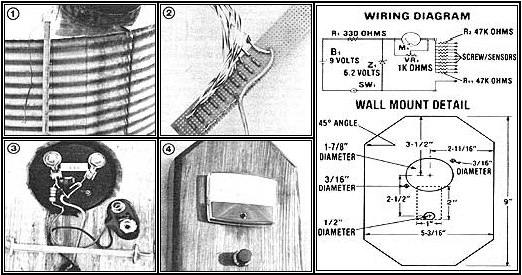
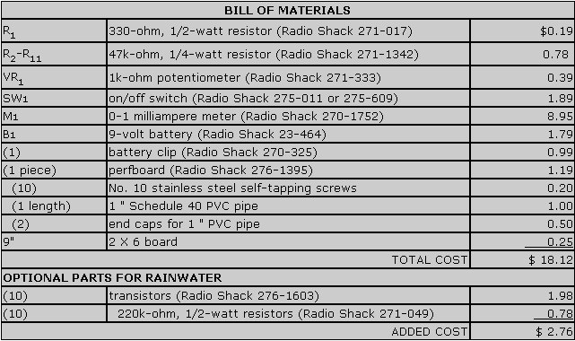
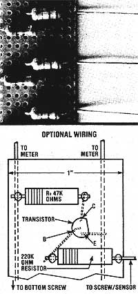

You can keep an eye on your water supply, with T.J. Byers'. . .
The amount of water that's held in storage at my remote homestead is of critical interest to me ... since I'm well out of reach of the nearest public utility. But I also have far more to do in a day than play nursemaid to a cistern. So, at the height of last year's dry season-when my water worries were at their worst-I put together a remote sensor for my tank.
Based on a few common electronic components, my device has proven to be infallible over the last 14 months. And now, monitoring the level in my holding tank-which used to involve a wearying and time-wasting walk up the hill-is as easy as glancing at my living room wall.
WATER CONDUCTS
Don't be intimidated because a few electronic gizmos go into the construction of my device. The components are easy to install, and the "Water Watcher" itself is simply based on the fact that water does a better job of conducting electricity than does air. If you place evenly spaced electrodes inside of the tank, wire them in parallel, and then apply current at the container's bottom . . . the amount of current returned to the meter will be in proportion to the number of electrodes that are in contact with the conducting liquid.
THE SENSOR TUBE
You can begin building your own water monitor by assembling the sensor tube (shown in Photo 1) . . . which consists of a piece of 1" Schedule 40 PVC pipe (three inches longer than the depth of the tank's maximum water level) and eleven No. 10 stainless steel, self-tapping sheet metal screws. The fasteners function as electrodes, and you can determine the proper position for each one by dividing your cistern's maximum water depth into ten equal segments. (For example, if the water is 30 inches deep, there should be a mark every three inches.)
Once you've located the points, drill a 3/16" hole at each spot . . . as well as an eleventh hole, positioned halfway between the bottom of the PVC and the first mark and 1/4 turn of the pipe to the left. (This opening will accommodate the "hot" line.)
When that's done, prepare 11 lengths of 16-gauge wire. The first should be about a foot longer than the tube, and each successive section should be three inches shorter than the previous one. With the exception of the "hot" wire, it makes no difference which lead is connected to which resistor ... so color coding isn't necessary. However, it's a good idea to identify the "power" line by tying a knot in its end. Complete the wire preparation by trimming 1/4" of insulation from both ends of each conductor.
You'll find it easier to string the wires into the tube if you start with the longest ("hot") wire first and work up . . . so slide the knotted length into the pipe and pull its stripped end through the bottom hole. Then carefully thread one of the screws into the hole so that it traps the wire and makes a good contact. (Be sure not to break any of the tiny metal strands with the sharp threads of the fastener.) Repeat the same procedure for the other ten wires, until the far ends are protruding from the top of the pipe.
PERFBOARD
Next, position the ten 47,000-ohm resistors in the one-inch-wide section of perfboard, as shown in Photo 2. All of the leads on one side of the board should be soldered together to form a common terminal ... while one sensor wire is connected to each resistor on the other side of the board. (Be sure you don't solder the knotted "hot" wire to a resistor.)
Now prepare as much two-swire conductor as you need to get from your water tank to the place where you plan to locate the meter. (This can be a considerable distance, since the variable resistor-often called a potentiometer-on the meter can adjust for the resistance of the hookup line.) Once your wire is prepared and strung, drill a hole in a 1" pipe cap (just large enough to provide a snug fit for the cable) and slip the double wire through. Solder one of the conductors to the line that's common to all the resistors on the perfboard . . . and then connect the other to the "hot" wire by sticking them both through one hole in the perfboard and soldering their ends together.
After the joined ends have had a moment to cool, slide the perfboard-and the excess wire-down into the PVC, slip the cap over the end, and apply silicone sealant to the wire hole and the seam. The water-resistant glue should also be used around the head of each elect rodelscrew . . . but don't cover,up the entire screw. To complete the sensor tube, you'll also need to apply a cap to the submerged end of the pipe with sealant. However, you may want to weight the base of the tube before installing the cap . . . so it will rest on the bottom of the tank.
THE METER
Follow the accompanying wiring diagram to hook up the meter, and consult Photo 3 for additional information. The only tricky part of this operation is making sure that the zener diode (Z 1 ) has its-banded end toward the post on the meter. (The zener limits the voltage in the circuit to 6.2, and if it's wired in backward, the circuit won't work.)
You can utilize either an on/off push button or what's called a "momentary switch" to turn on your Water Watcher. The latter does provide one advantage: Since the momentary switch applies power only when it's held down, it won't let you leave your gauge on and accidentally discharge the battery.
Of course, the meter I've specified is designed to measure DC milliamperes, and the face of the dial reads in those measurements. If you decide to alter the lettering on the face to read "water"-as mine does you-must be very careful not to damage the sensitive needle.
A TOUCH OF CLASS
I built the mounting board for my water monitor's meter assembly (Photo 4) from a leftover chunk of 2 X 6. You can follow the dimensions I used on my system to achieve the "wall plaque" look, or strike off on your own. One precaution, though: The mounting screws for the meter are not evenly spaced, so be sure to use the template supplied by the manufacturer when you're drilling the holes.
MEASURE FOR MEASURE
In order to calibrate your Water Watcher, just fill the tank, insert the 9V battery, press the "on" button, and turn the variable resistor (VR 1 ) until the needle registers "1". From then on, the indicator's position will automatically correspond to the percentage of water left in the tank ... ".9" equals 90%, ".8" equals 80%, and so forth.
Once you've hung your Water Watcher on the wall (and, by the way, an old beverage can's poptop makes an excellent hanger), you will never be caught dry-mouthed again.
Although my Water Watcher has performed unerringly for over a year now, there Is a remote possibility that you may not be able to obtain a full-scale reading when your storage tank Is full. Such a "malfunction" would be due to the fact that the conductivity of water changes in proportion to the kinds and amounts of minerals dissolved In the liquid.
The resistivity of normal well water-for which my original Water Watcher was designed-averages about 10,000 ohms per cubic centimeter. However, rainwater's resistance can exceed 100,0 ohms per centimeter . . . and such "soft" water could prevent you from being able to calibrate your meter.
There are two basic approaches to circumventing such a dilemma. The easiest way is to increase the conductivity of the water by adding minerals . . . I've found that a tablespoon of salt added to each 1,000 gallons works fine. But some readers, quite understandably, will be opposed to adding any foreign substance to their precious supply of water. The alternative to increasing the fluid's conductivity is to increase the sensor's sensitivity . . . which can be accomplished with the addition of a few transistors.
MULTIPLYING SENSITIVITY
The transistor-a result of silicon wizardry and the progenitor of today's solidstate electronics-is essentially an amplifier. By adding ten of the small semi-conductors along with an equal number of resistors-the sensitivity of the Water Watcher will be increased 50 fold. . . for a mere $3.00.
All of the additional parts ate connected to the original periboard . . . and supplement the ten 47,000-ohm resisters. Be sure to follow the picture and diagram very closely when wiring the new pieces: Transistors have three leads, and they must all be connected properly.
On the board diagram you'll see that the transistor leads are labeled E, B, and C. Don't contuse them! The remainder of the procedure is the same as in the device's original construction. Repeat the calibration steps, and-if you fail to get the proper reading-reverse the wires to the resistor board. (Transistors are polarity-sensitive.)
|
 |
 |
 |